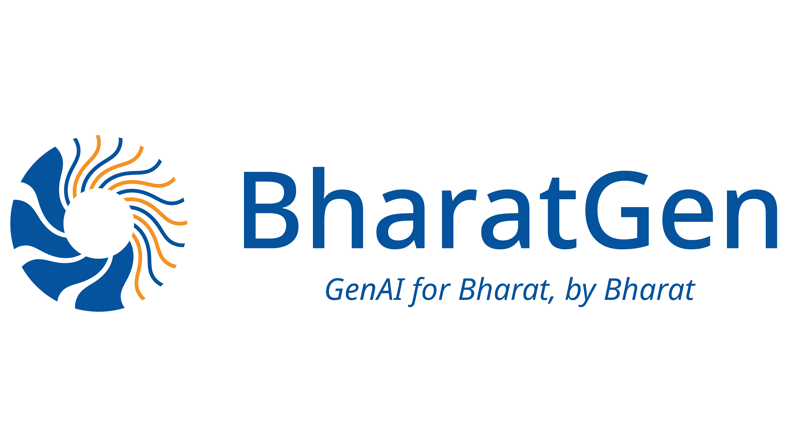

Understanding the Page —
and Rebuilding It
Four systems on one problem: making a document page something a model can point at, reason over, and put back together.

A page is a spatial object, not a string of text
Flatten a document into tokens and two different things break — and they break in opposite directions. This talk is those two failures, and what fixing each one takes.
Where is the evidence?
The model answers, but cannot show you which pixels the answer came from — so you cannot check it.
- A bounding box is the wrong shape for a pie wedge, a curved label, a merged cell
- Evidence is multi-granular: a span, a row, a whole region
- Reasoning has many steps — each step needs its own evidence
Can you put it back?
The words survive the round-trip. The page does not — layout, geometry and styling are gone.
- OCR and parsers recover text and some structure, never the geometry
- Without position, you cannot tell which number belongs to which row
- Without style, a struck-through line reads as a live one
Four systems, two movements
Part I builds up from grounding a single answer to grounding the entire page. Part II takes that page and reconstructs it.
M3Grounder
Answers grounded in masks, not boxes — any shape, at three granularities.
DoCoG
Grounds every step of the reasoning, not just the final answer.
DocLayout-VL
Grounds the whole page: a layout tree with a mask on every node.
REPLICA
Agents rebuild the page as FID-HTML that renders back to the original.
Grounding
the Page
From “here is the answer” to “here is the answer, and here is exactly where it lives.”
We can now point at the whole page. We still can't produce one.
The page became addressable
- Evidence has arbitrary shape — masks, not boxes (M3Grounder)
- Evidence attaches to each reasoning step (DoCoG)
- The full page decomposes into a tree of grounded regions (DocLayout-VL)
Reading ≠ reconstructing
- All three consume a page. None has to emit one
- A layout tree says what is where — not what it looks like
- Nothing so far is scored on whether the output renders back
Rebuilding
the Page
Reconstruction you can look at — a representation that renders, and a metric that scores what you see.
One recipe, four systems
Different papers, different venues — the same three moves each time.
keep the geometry
at scale, no hand-drawn labels
score the thing you fixed
The consistent finding across all four: the representation is the result. Boxes cap what grounding can express; text-only HTML caps what reconstruction can preserve. Change what the model is allowed to say, and the metric moves.
Questions?
m3grounder.github.io · docog-eccv.github.io
doclayoutvl.github.io · replica-agents.github.io